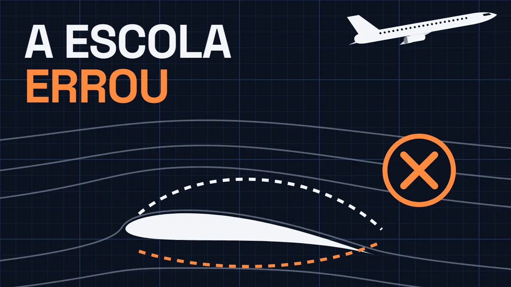
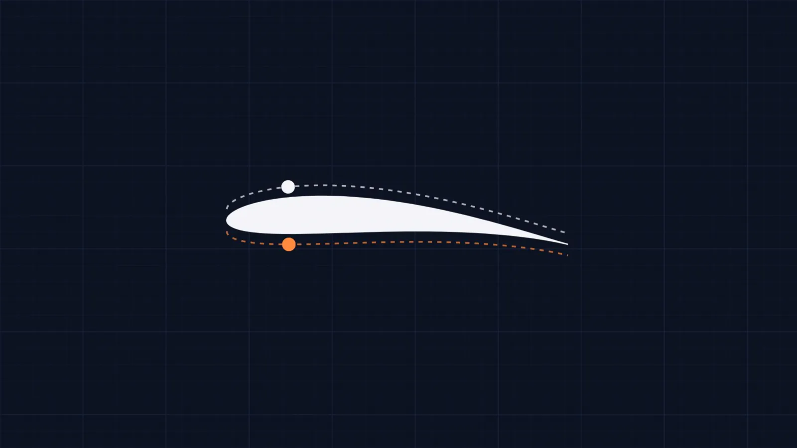
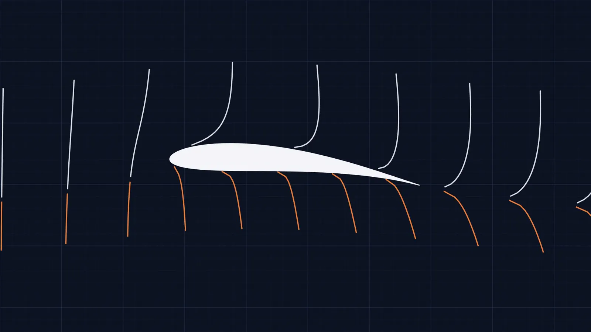
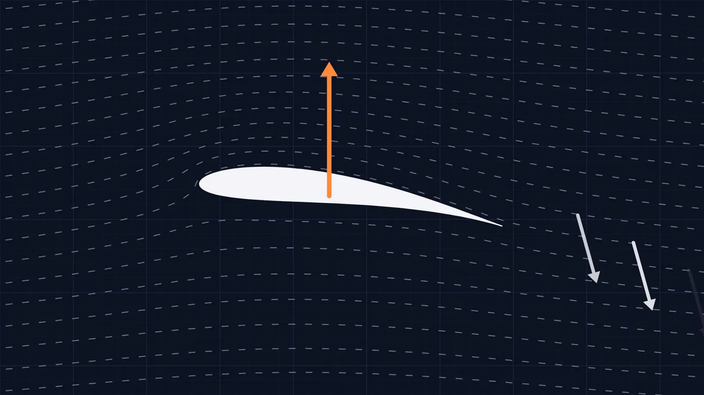
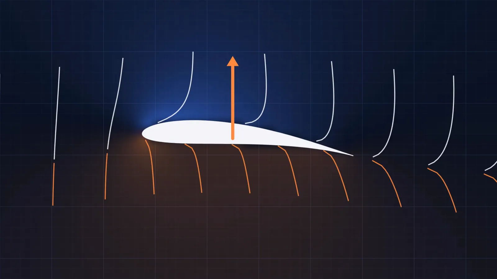
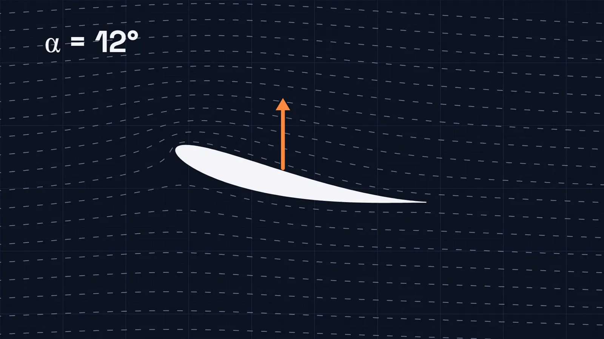
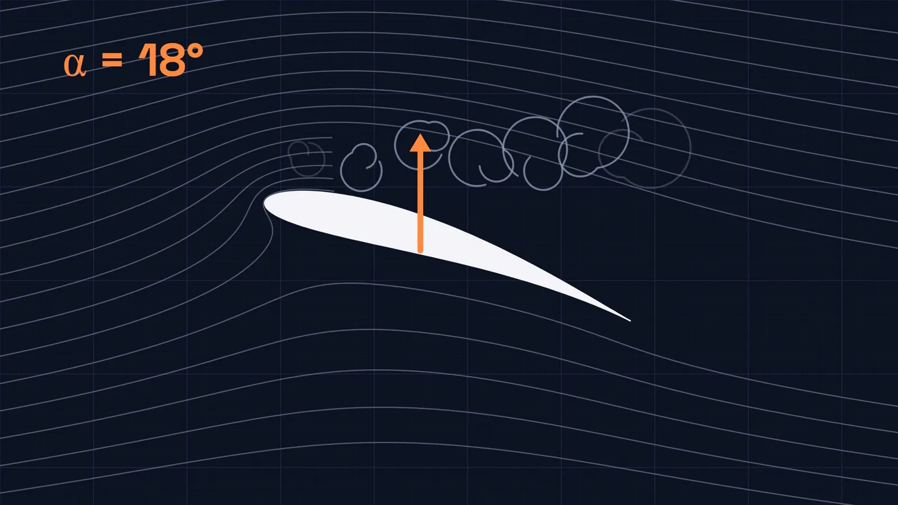
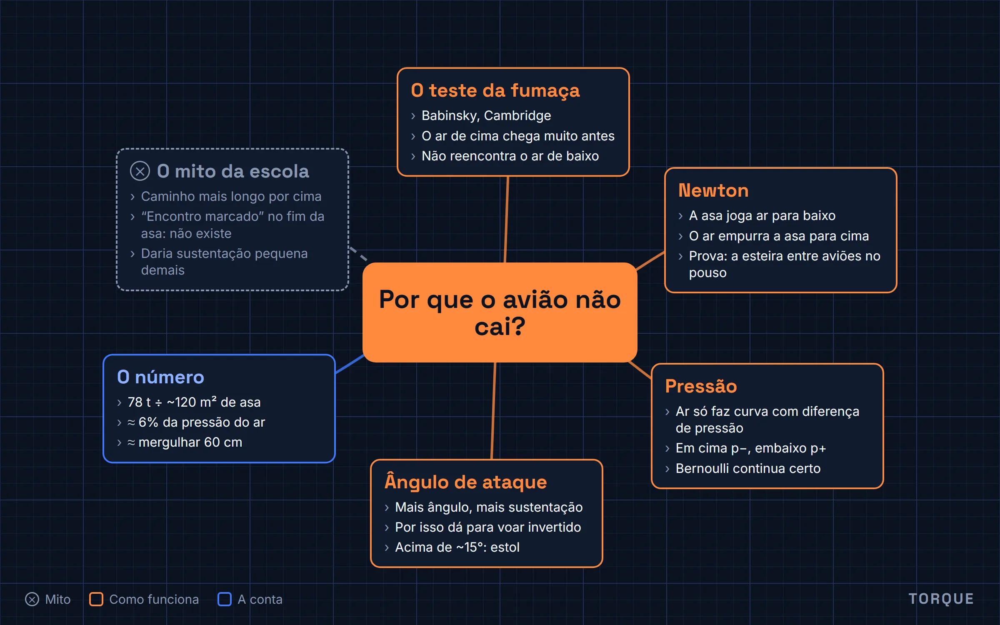

Por que o avião não cai? A explicação da escola está errada
O artigo do vídeo de 29 de outubro de 2026, com as figuras e um mapa mental no fim. Leitura de 7 minutos.

O player do YouTube só carrega quando você clica. Abrir no YouTube
Um Airbus A320 pode decolar pesando 78 toneladas, o peso de uns cinquenta carros. Mesmo assim ele sobe e fica horas lá em cima, apoiado em nada além de ar. Quase todo mundo sabe explicar como, porque aprendeu na escola. O problema é que essa explicação está errada.
A explicação da escola
A versão clássica é assim: o ar chega na frente da asa e se divide. Uma parte passa por cima e a outra por baixo. Como a parte de cima da asa é curvada, o caminho por cima é mais longo. E, como as duas partes precisam se reencontrar no fim da asa ao mesmo tempo, o ar de cima tem que correr mais.
Aí entra o Bernoulli: onde o ar corre mais, a pressão cai. Pressão menor em cima, maior embaixo, e a asa é empurrada para cima.
O furo está numa frase que passa despercebida: as duas partes do ar precisam se reencontrar ao mesmo tempo. Nenhuma lei da física obriga isso. O ar não tem encontro marcado com o outro lado da asa; a regra foi inventada para a explicação fechar.

O teste da fumaça
Dá para testar. O professor Holger Babinsky, da Universidade de Cambridge, pôs uma asa num túnel de vento e soltou fumaça em pulsos, como fileiras de soldadinhos marchando juntos em direção à asa. Se a teoria da escola estivesse certa, cada fileira se dividiria na frente da asa e voltaria a se juntar, certinha, no fim.
Não é o que acontece. O ar que passa por cima chega ao fim da asa muito antes do ar de baixo, tão antes que já está longe quando o ar de baixo chega. O ar de cima corre mais, sim, só que muito mais do que a teoria da escola prevê. E a conta feita com a diferença de caminho dá uma sustentação pequena demais para levantar um avião.

Tem mais dois furos. Avião de acrobacia voa de cabeça para baixo, e avião de papel tem asa reta, sem curva nenhuma. Se a sustentação viesse do caminho mais longo por cima, nenhum dos dois funcionaria.
A asa empurra o ar para baixo
Comece pelo que dá para ver: uma asa voando não deixa o ar do jeito que encontrou. Ela joga uma enorme quantidade de ar para baixo, o tempo todo. Pela terceira lei de Newton, se a asa empurra o ar para baixo, o ar empurra a asa para cima, com a mesma força.
É o que você sente com a mão para fora da janela do carro: incline a palma um pouco para cima e a mão sobe. Ela está desviando o ar para baixo, e o ar responde.

Esse ar jogado para baixo é tão real que dá para medir. É por isso que, no pouso, os aviões mantêm uma distância mínima um do outro: o ar que o avião da frente deixou ainda está girando e descendo, e pode sacudir o de trás.
De onde vem a diferença de pressão
Falta explicar como a asa empurra tanto ar sem encostar em quase nada. A resposta está na pressão. O ar não faz curva sozinho: para uma corrente de ar seguir um caminho curvo, alguma coisa tem que empurrá-la para o lado de dentro da curva, e essa coisa é a diferença de pressão. Do lado de dentro da curva a pressão fica mais baixa; do lado de fora, mais alta.
É como um carro numa curva, em que o pneu empurra o carro para o centro. No ar, quem faz esse papel é a pressão.
Agora olhe para a asa. O ar que passa por cima acompanha a curva dela e é desviado para baixo; para fazer essa curva, a pressão logo acima da asa precisa ficar mais baixa do que a do ar ao longe. Embaixo, a asa inclinada atrapalha o caminho do ar, e ali a pressão fica um pouco mais alta.

Pressão baixa em cima, alta embaixo: a asa é sugada e empurrada para cima ao mesmo tempo. E o ar de cima, que entra numa região de pressão mais baixa, acelera. É por isso que ele chega antes no teste da fumaça.
Repare que o Bernoulli não estava errado: pressão e velocidade continuam andando juntas. O errado era o motivo para o ar acelerar. Não é o caminho mais longo, é a curva que a asa impõe ao ar. Nas palavras do Babinsky, é a curvatura que cria a sustentação, não a distância.
O segredo é o ângulo
Se a curva é o que importa, o formato da asa ajuda, mas não é tudo. O que mais pesa é o ângulo da asa em relação ao vento, o ângulo de ataque. Inclinou um pouco mais para cima, a asa desvia mais ar e a sustentação aumenta. É o que o piloto faz ao puxar o manche na decolagem, e é também como o avião de acrobacia voa de cabeça para baixo: o piloto ajusta o ângulo para que a asa, mesmo virada, continue desviando o ar para baixo.

Esse truque tem limite. Na maioria das asas, passando de uns 15 graus, o ar de cima não consegue mais acompanhar a curva: ele se descola e vira um redemoinho bagunçado. A sustentação despenca de uma vez. É o estol, um dos momentos mais perigosos do voo, e por isso todo avião tem alarmes que avisam o piloto quando a asa se aproxima desse ângulo.

O número que segura o avião
Volte ao A320 de 78 toneladas. A asa dele tem uns 120 metros quadrados. Divida o peso pela área e você descobre a diferença de pressão necessária entre a parte de baixo e a parte de cima da asa.
Memória de cálculo
- Peso máximo de decolagem
- 78.000 kg × 9,81 m/s² ≈ 765.000 N
- Área da asa
- 122,6 m²
- Diferença de pressão
- 765.000 N ÷ 122,6 m² ≈ 6.240 Pa
- Pressão do ar ao nível do mar
- 101.325 Pa
≈ 6% da pressão do ar
É a média na decolagem, perto do chão. A diferença de pressão equivale a uns 64 cm de água, o que você sente no ouvido ao mergulhar 60 centímetros numa piscina.
Uma diferença que você mal percebe no corpo. Espalhada por 120 metros quadrados de asa, ela segura 78 toneladas no ar.
Então, Bernoulli ou Newton?
Os dois. São dois jeitos de descrever a mesma coisa: a asa curva o ar para baixo, isso cria a diferença de pressão, e a diferença de pressão segura o avião. O que não existe é o ar de cima correndo para chegar junto com o de baixo.
Se mesmo assim parece estranho, você está em boa companhia. Engenheiros até hoje discutem qual é o jeito mais simples de explicar a sustentação. A física está resolvida; explicar em uma frase é que é difícil.
Bônus: o vídeo inteiro num mapa mental
As seis ideias do vídeo numa imagem só, para revisar ou mostrar para alguém.

Fontes
- H. Babinsky, “How do wings work?”, Physics Education 38(6), 2003, p. 497–503 (Universidade de Cambridge).
- “How wings really work”, Universidade de Cambridge, 2012: o vídeo de Babinsky com os pulsos de fumaça.
- NASA Glenn Research Center, Beginner’s Guide to Aeronautics: teorias erradas da sustentação.
- E. Regis, “No One Can Explain Why Planes Stay in the Air”, Scientific American, fevereiro de 2020.
- Airbus, especificações do A320ceo: peso máximo de decolagem de 78 t.